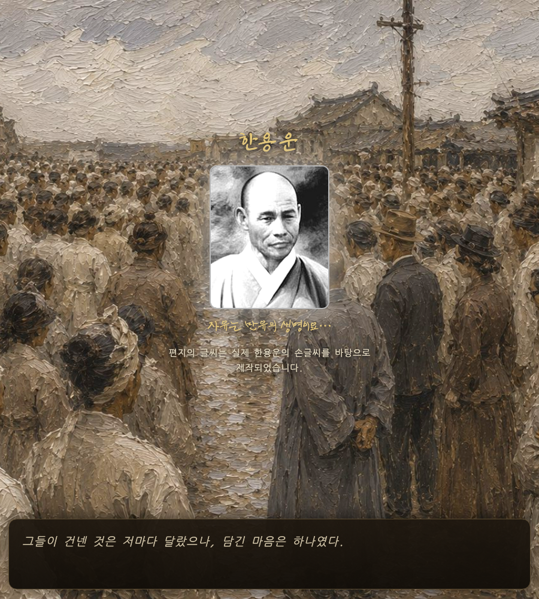
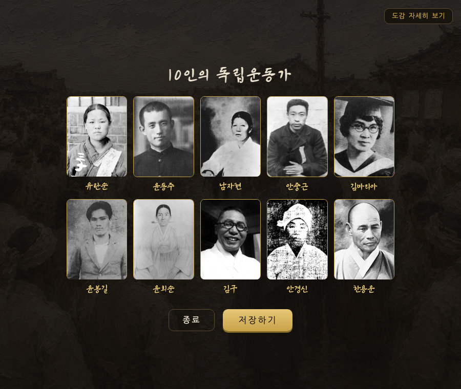
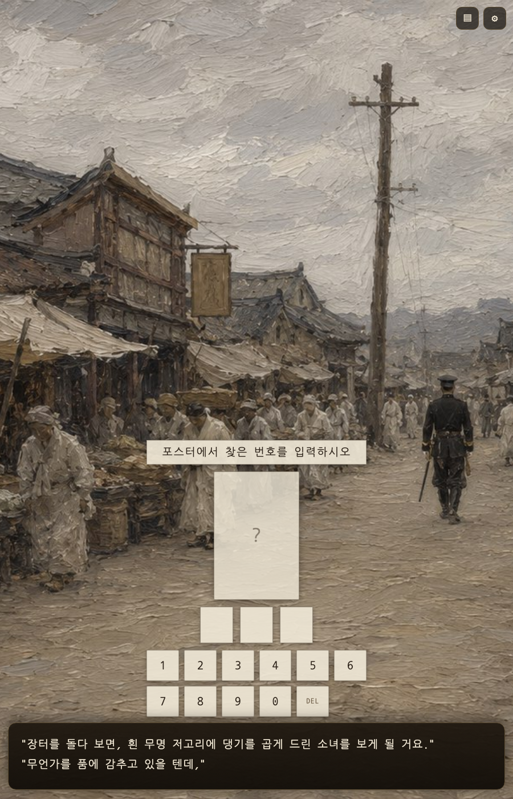
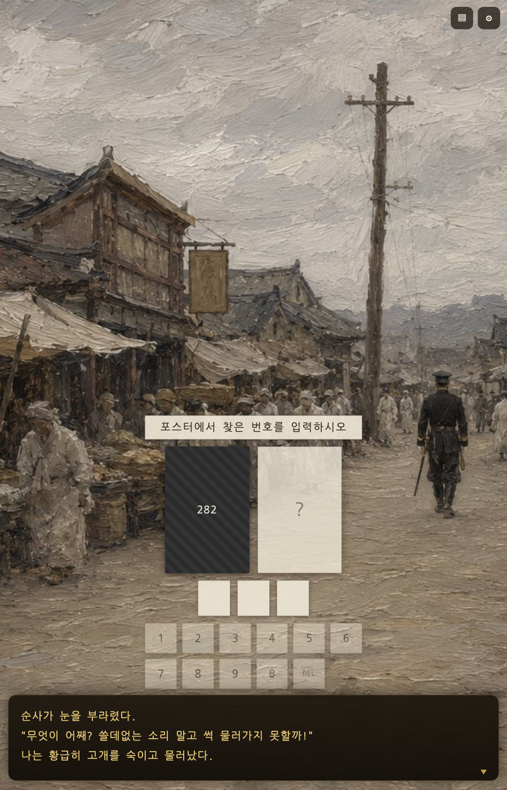
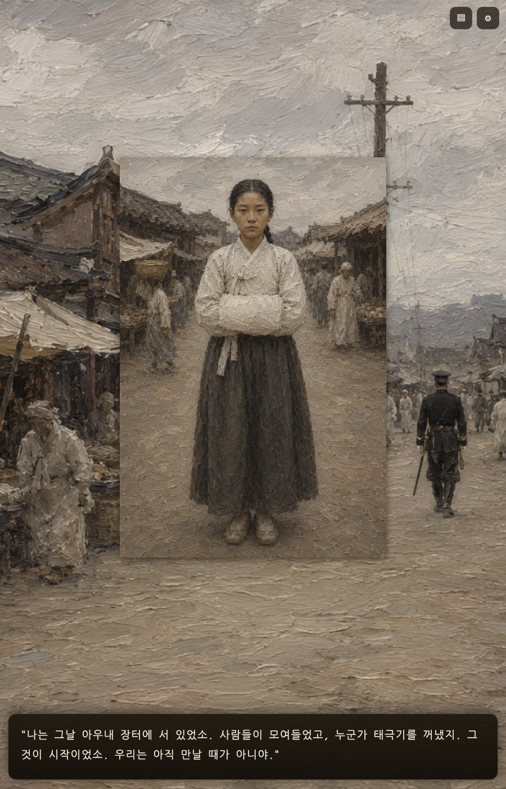
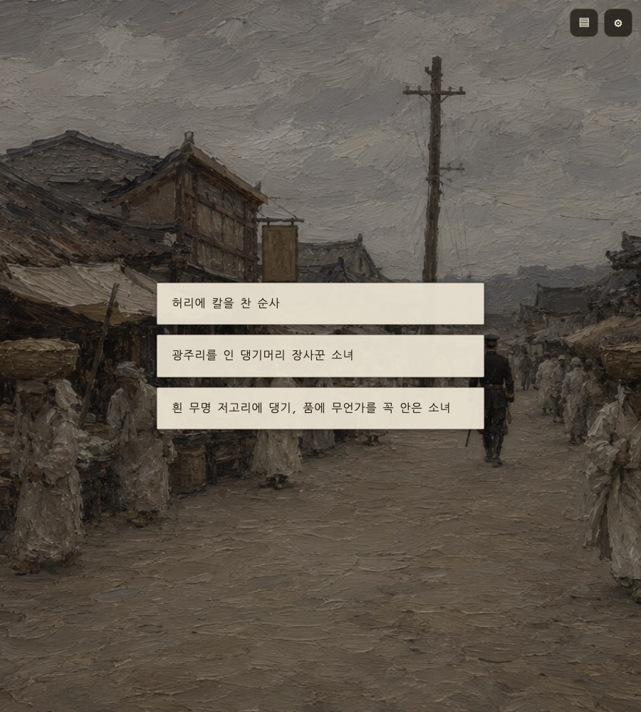
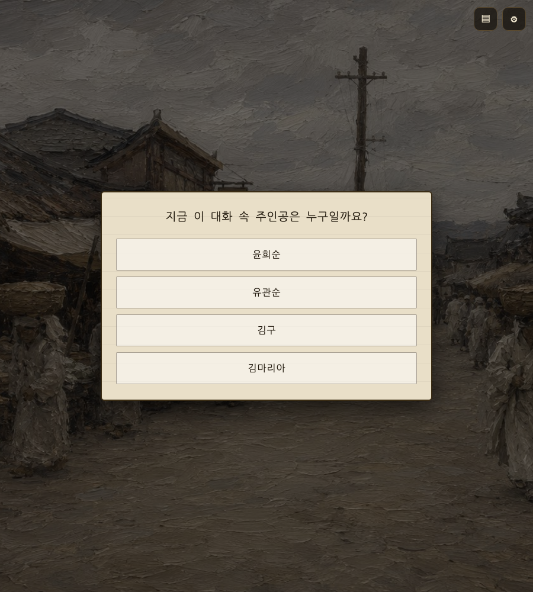
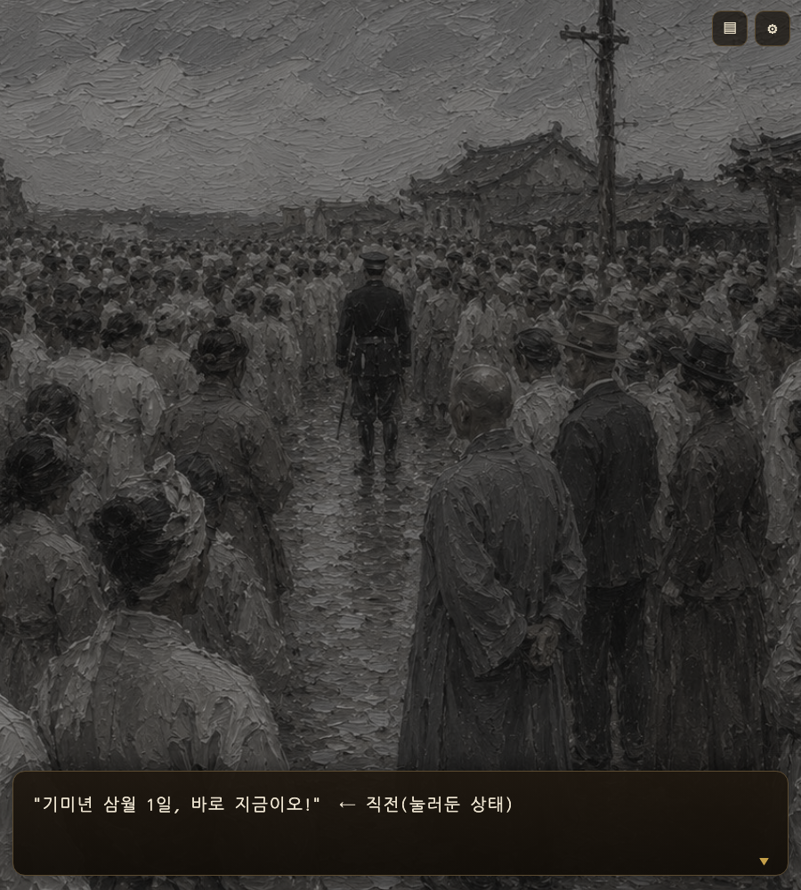
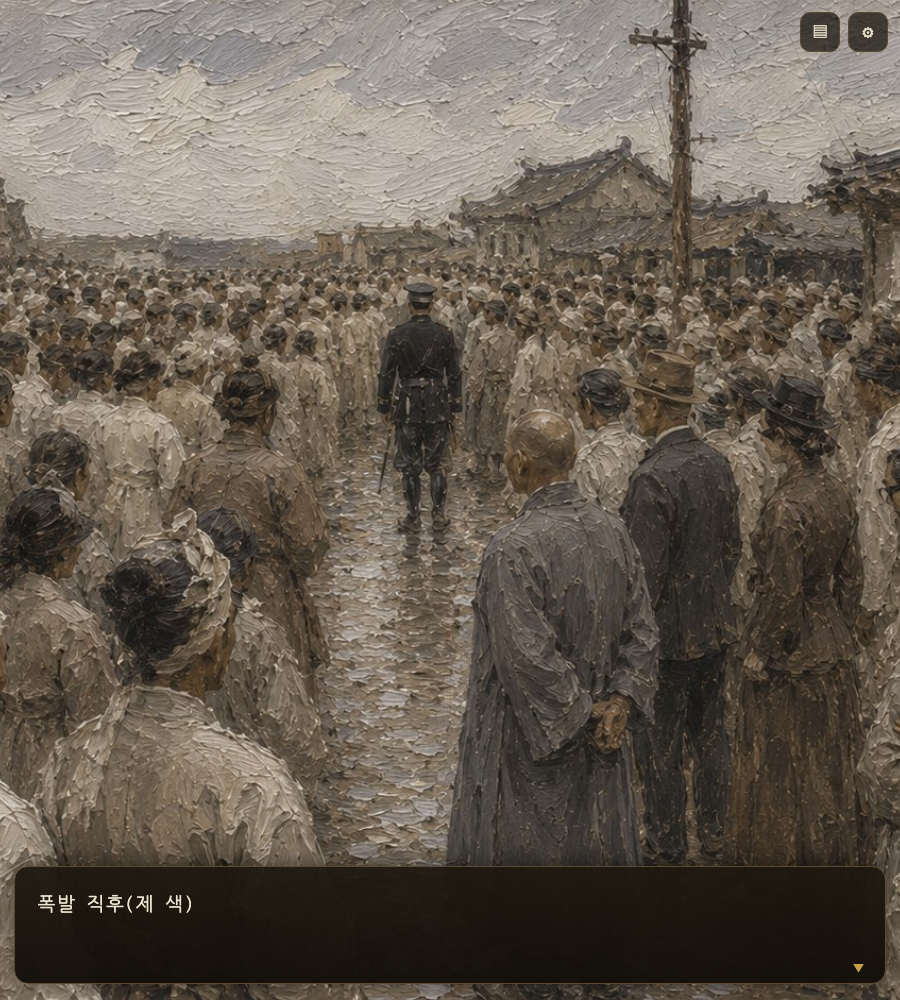

엔딩 몽타주
배경이 진짜 만세 인파 그림으로 바뀌었습니다. 자막도 "…바탕으로 / 제작되었습니다"로 낱말이 안 쪼개집니다.

결과 화면
10인 사진이 들어갔습니다.

한용운 필체 — 수정 전
사진 위에 겹쳐 잘려 나갔습니다.

반영안내 문구를 맨 위로 올리고 13px→19px로 키워 배경에 안 묻히게. 포스터 자리 78px→150px. 키패드 세로 4줄→가로 2줄, 화살표→DEL. 금빛을 전부 걷고 배경 그림에서 뽑은 종이색으로 통일(A2안).



반영같은 종이 언어로 통일. 학습 패널이 원래 종이라 결이 맞습니다.
판단퀴즈 정답 표시를 금빛→먹빛으로 바꿨습니다. 금빛을 걷되 정답/오답 구분은 남겨야 해서,
정답=먹빛 굵은 테두리 / 오답=주홍으로 잡았습니다.


반영색부활을 폐기하고 뒤집었습니다. 15-5부터 배경이 9초에 걸쳐 서서히
색을 잃고 어두워지다가, "기미년 삼월 1일, 바로 지금이오!"에서 눌린 것이 풀리며 제 색으로 터집니다.
원인이었던 버그도 함께 잡았습니다 — 예전엔 이 시점에 배경 그림이 그라데이션으로
통째로 갈아치워져, 애써 그린 그림이 사라졌습니다(엔딩 내내 그라데이션이던 이유도 이것).


반영15 한용운 필체가 사진 위에 겹쳐 잘려 안 보이던 것 → 다른 4인과 같은 자리로.
8 낱말이 쪼개지던 줄바꿈 → 낱말 단위로만.
14 인물이 왼쪽 아래로 흘러가던 이동 제거 → 디졸브.
16 마지막 대사 → 대사창 서서히 걷힘(1.2초) → 한 박자 비움(1.4초) → 결과 화면.
판단18 결과 화면 배경으로 만세 인파(r10_crowd)를 추천·적용했습니다.
엔딩 몽타주와 같은 그림이라 안 끊깁니다.
판단결과 화면 10인 격자에 사진 대신 이름 글자가 들어가 이름이 두 번 나오던 버그를 고쳤습니다.

